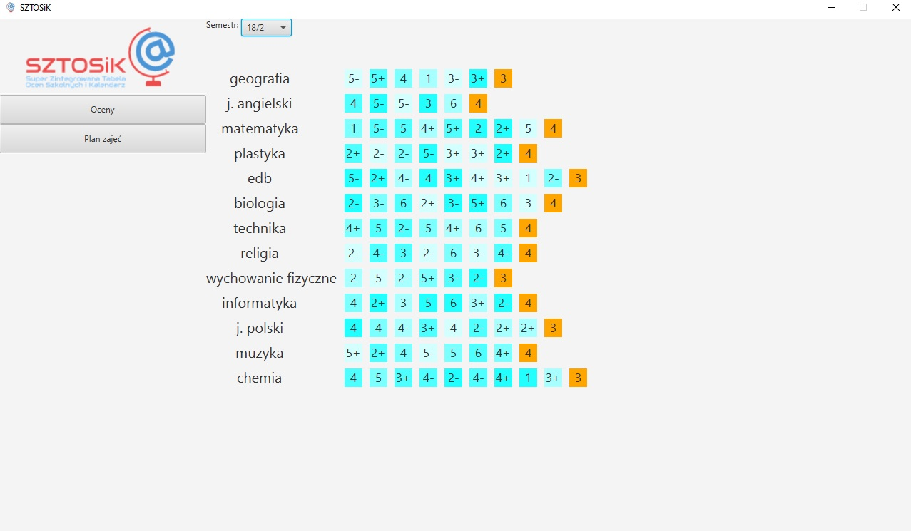

O projekcie
Projekt ten powstał na potrzeby kursu z Baz Danych. Mieliśmy stworzyć funkcjonalną realizującą wybrane przez nas
samych funkcjonalności, która wykorzystywała baże danych.
W naszym przypadku wybór padł na Javę i MySQL, a sama aplikacja służy do zarządzania ocenami i planem lekcji.

O samej aplikacji
Nasza aplikacja pozwala na zalogowanie się do systemu za pomocą konta uczniowskiego, bądź nauczycielskiego.
Uczeń jest w stanie zobaczyć swoje oceny oraz swój plan lekcji z różnych semestrów. Nauczyciel natomiast
może przeglądać oceny wszystkich swoich podopiecznych oraz wystawiać je im. Do nadawania uprawnień i
tworzenia kont jest wykorzystywane specjalne konto administratorskie.
Całość została napisana w Javie z wykorzystaniem JavaFX do interfejsu graficznego oraz JDBC do połączenia z
bazą danych.
Dzięki rozdzieleniu aplkacji na klienta i serwer, można dowolnie modyfikować poszczególne moduły bez
ingerencji
w drugi.